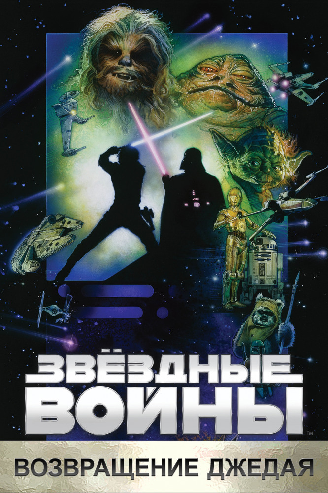

Эпизод VI: Возвращение джедая
Сюжет
В шестом эпизоде «Звездных войн» Дарт Вейдер создает вторую «Звезду Смерти». Он объединяет все силы зла, чтобы с помощью этого смертоносного оружия нанести последний сокрушительный удар по повстанцам и их союзникам. Люк Скайуокер вместе с принцессой Лейей и верными дроидами R2D2 и C-3PO отправляется спасать своего друга Хана Соло, который попал в плен к отвратительному Джаббе Хатту — могущественному повелителю преступников. Повстанцы высаживаются на планету Эндор, чтобы оттуда вместе с Люком и его отрядом предпринять последнюю атаку на Имперский флот, атаку, от которой зависит судьба Галактики. В этом эпизоде Люк Скайуокер и Дарт Вейдер встречаются в последний раз… ибо из поединка между отцом и сыном живым выйдет только один…